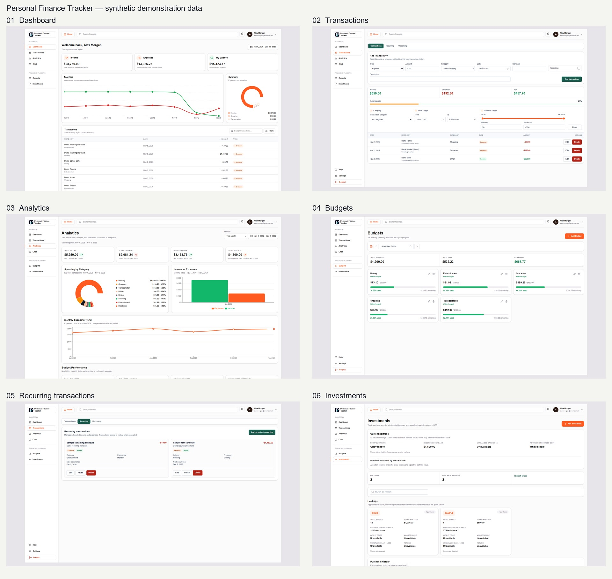

Real application footage using fictional demonstration data. Silent recording with descriptive captions. Live quotes and Gemini are disabled. These approved assets are integrated locally into the draft case study. Publication approval remains pending.
Recommended hero: Dashboard. Review full-resolution PNGs for small interface text.
